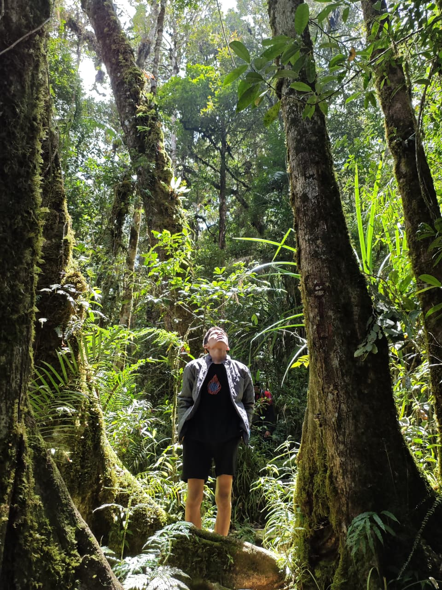

Jejak Langkah Di Alam Bebas
Dipublikasikan pada 28 September 2026
Setiap perjalanan selalu meninggalkan cerita. Ini adalah beberapa momen pendakian terbaru saya—menikmati sejuknya udara pepohonan, menyusuri jalur setapak, dan menemukan ketenangan jauh dari hiruk-pikuk kota. Alam selalu punya cara terbaik untuk memulihkan energi.



Keahlian
Dipublikasikan pada 25 September 2026
Selain aktif berpetualang di alam bebas, saya juga terus mengembangkan diri di bidang Health Information And technologi. Berikut adalah ringkasan keahlian dan kompetensi yang saya miliki.
- Ms Word.
- Ms Powerpoint
- Rekam Medis Elektronik
- Perencanaan & Manajemen Logistik: Terbiasa membuat perencanaan matang (itinerary), manajemen perbekalan, dan mengelola tim saat perjalanan di alam terbuka.
- Pemecahan Masalah (Problem Solving): Mampu berpikir tenang, beradaptasi dengan cepat, dan mencari solusi taktis saat menghadapi situasi tak terduga.
Jika Anda tertarik untuk berkolaborasi dalam sebuah proyek atau perjalanan, silakan hubungi saya di Instagram : _ibnuujmill.